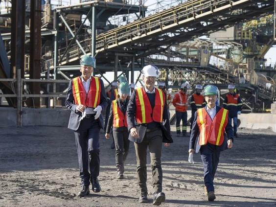
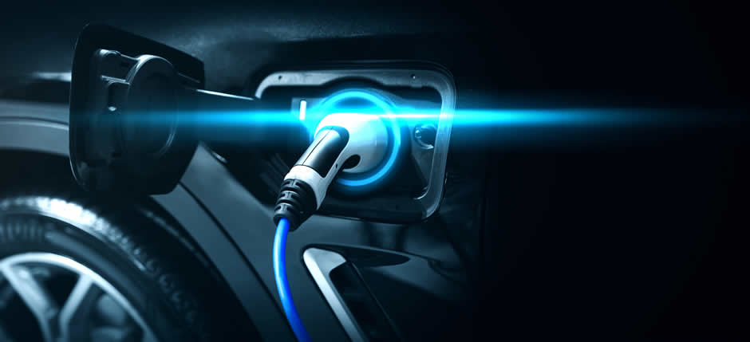

HISTORY UNFOLDS📙
The history of the battery supply chain in Ontario, Canada can be traced back to the early 20th century, when the first lead-acid batteries were manufactured in the province. During the 1960s and 1970s, Ontario saw a significant expansion of its battery manufacturing industry, with the establishment of several large battery production facilities.The battery supply chain in the Windsor-Essex region of Canada has a relatively short history, given the recent growth in demand for batteries for various applications, including electric vehicles and renewable energy storage. The region has seen some investment in battery production and recycling facilities in recent years, with companies looking to tap into the growing demand for batteries and capitalize on the region's proximity to the US market. For example, Canadian recycling firm Li-Cycle has opened a battery recycling facility in the area, while electric vehicle maker Fisker has announced plans to build an electric vehicle factory in the region. Overall, the battery supply chain in the Windsor-Essex region is still in the early stages of development, but with increasing demand for batteries expected in the coming years, the region is poised to play a significant role in the growth of this industry.

CURRENT SCENARIO 🚙
Canada’s electric vehicle (EV) infrastructure has accelerated significantly in recent years, with investments from some of the world’s largest manufacturers signalling a major transition for the country’s EV landscape. In particular, the Canadian province of Ontario is fast becoming the epicentre of Canada’s EV manufacturing supply chain. Since the governmental shift in 2018, a lowering of costs for businesses has seen major players in the vehicle and green manufacturing world turn to Ontario to expand their assets.With the support of the Ontario, federal and municipal governments, LG Energy Solution and Stellantis are investing in Windsor for the province's first large-scale Electric Vehicle battery manufacturing plant. According to News Ontario, the joint venture of the above two companies will invest more than CDN $5 billion (USD $4.1 billion) to build a facility in Windsor to manufacture batteries for EVs in Canada. This will represent the largest automotive manufacturing investment in the history of the province. Construction is scheduled to begin this summer with the plant becoming operational in the first quarter of 2024.
FUTURE OF EVs 🚗
Canada is well-positioned to assume leadership across all 5 segments of the EV battery supply chain: mining and mineral processing; cathode and anode manufacturing, and chemical precursors; battery manufacturing; electric vehicle manufacturing and parts supply; and battery recycling. With 1.1 million kilometres of public two-lane roads, a colder climate and 18 per cent of the population living in rural areas requiring longer drives, Canada will need more public charging infrastructure than California, not less. Equally concerning is the rate of Canada’s charging infrastructure build-out. As of September, 2022, just 2,500 chargers were operational of the planned 84,500 government-funded chargers. At this pace of construction, government-funded chargers won’t be fully operational until well past 2050, decades after the federal government’s target of 100 per cent EV sales.
